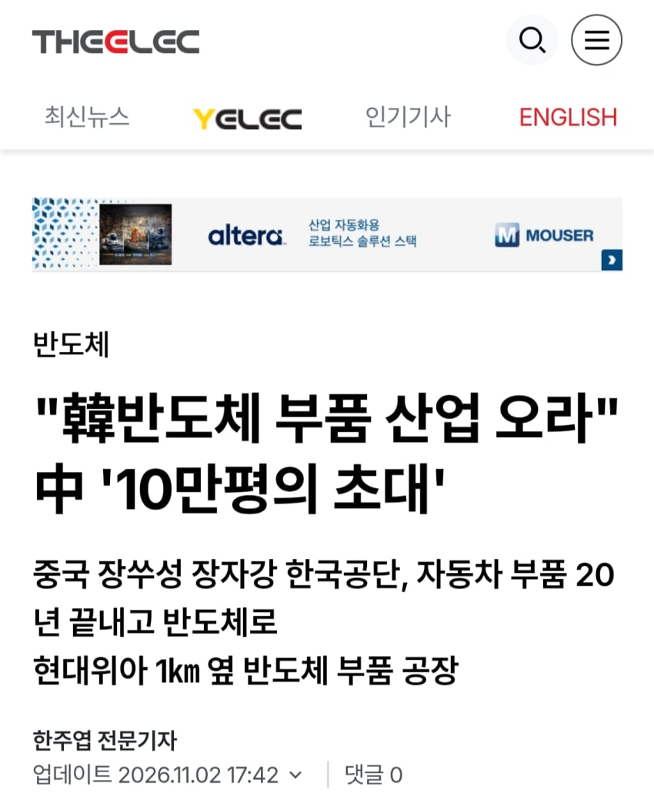
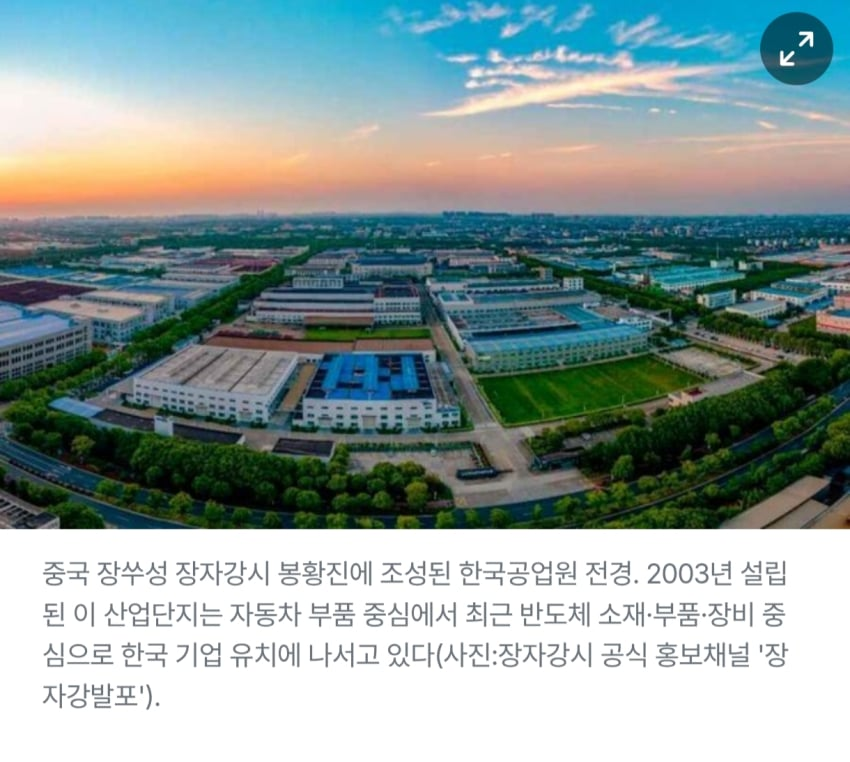
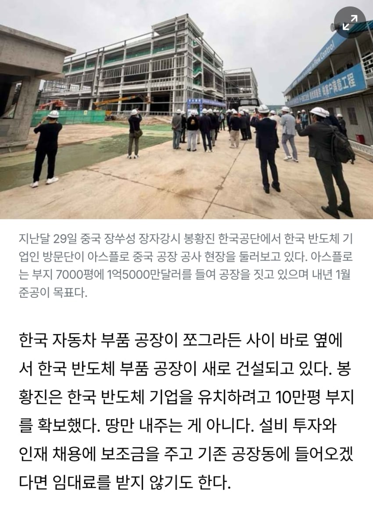
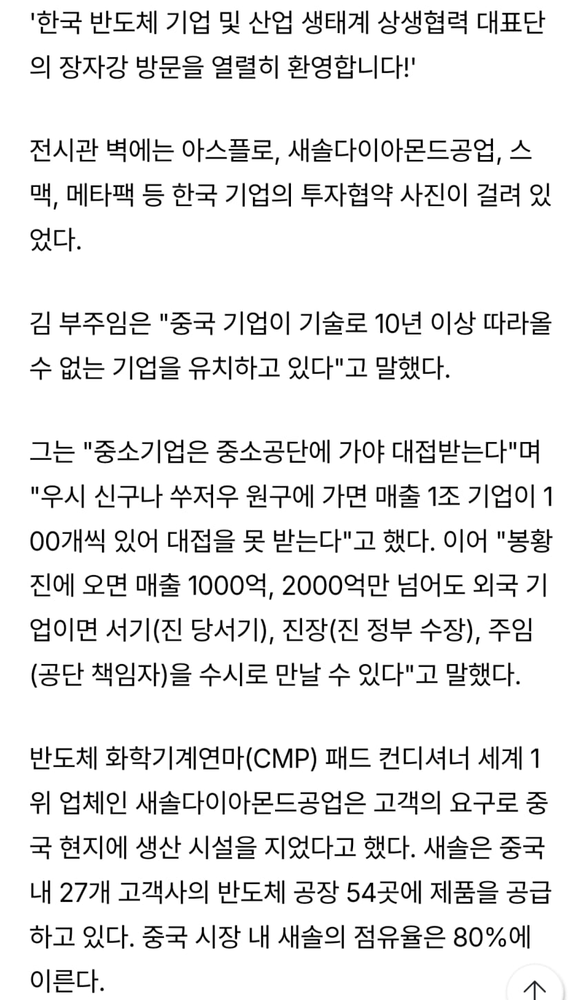
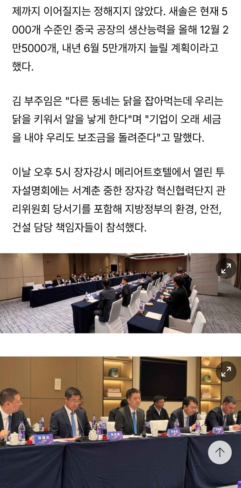
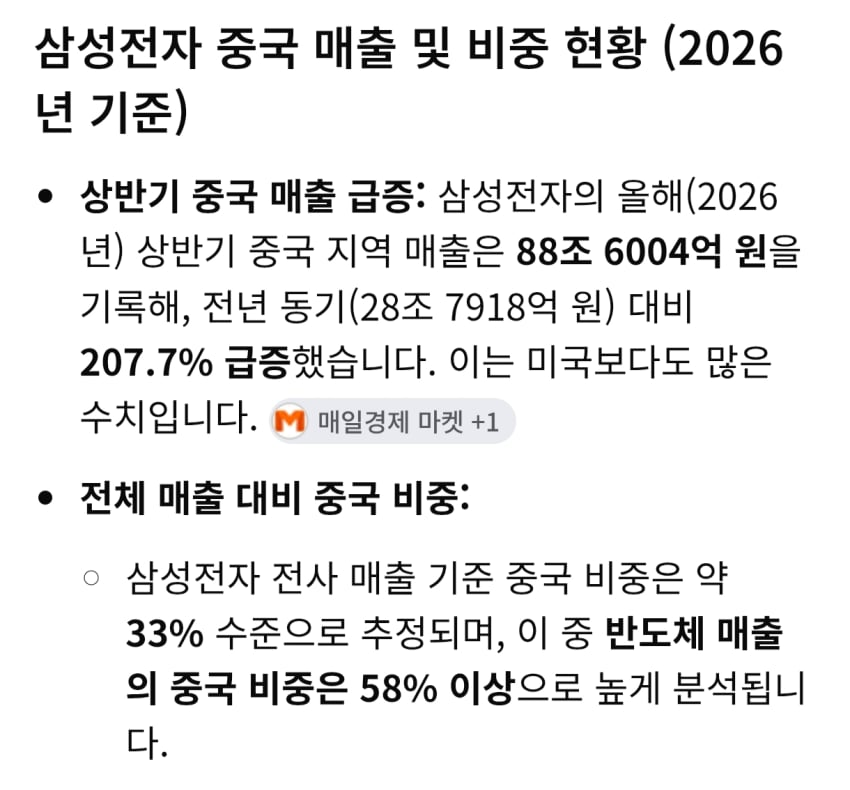

"韓반도체 부품 산업 오라" 中 '10만평의 초대' < 반도체 < 기사본문 - 디일렉(THE ELEC)

이미 몇몇 한국 반도체부품회사들이 들어갔다함..
10만평부지에 각종 세금혜택, 행정혜택, 임대료 면제, 지원금까지 조건이 파격적이고
중국고객사들이 현지생산업체를 우대하기에 중국쪽에 납품하는 한국 반도체부품회사로서는 뿌리치기 힘든 유혹이라는...
삼전만해도 반도체 짱깨수출 비중이 58퍼..

짱깨비중이 아직도 높아서 한국부품회사들의 경우도 매출에 짱깨비중이 높다함
이거 정부가 법으로 막아야 하는거 아님?
댓글
댓글 보관 대기 중입니다. 원문 응답 오류가 있으면 다음 실행에서 다시 수집합니다.